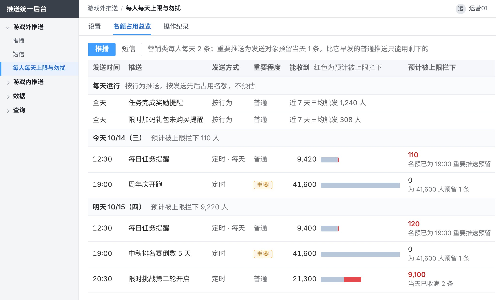

推送统一后台需求
后台结构

第一部分
游戏外推送第 1–4 页
第一部分 游戏外推送第 1 页 / 共 12 页
按玩家分群推送


业务规则标签群组 · 内容 · 发送对象 · 发送时间 · 所属活动 · 防错
标签群组
| 现有：在会员标签设定里用会员标签按且、或、排除组合出一组玩家，随标签数据定时更新。 |
| 新增功能：建群组时可在群组之间取交集，如「回流且潜在付费」；每个条件显示人数。 |
| 新建 7 个标签： · 潜在付费：注册第 7–60 天、从未储值、近 14 天押注合计不低于 20,000（游戏内货币） · 潜在流失两档：注册满 28 天、近 7 天内有登录、第 15–28 天登录不少于 4 天，且近 14 天登录 2–3 天；另一档其余相同、近 14 天登录 1 天；两档的群组都排除新增、回流玩家 · 近 7 天发生过破产 · 注册后未再登录两档：注册次日未再登录；注册第 3 天未再登录 · 随机分桶号：按会员编号和所属实验算出的 0–99，每位玩家在同一实验里固定一个号，实验改名不重新分组；用来分实验组与对照组（见第 5 页） |
| 在用的标签群组不能停用或删除；修改在用的群组时，保存前列出受影响的推播、短信、快显和弹窗规则。 |
内容
| 标题与内容按繁中、越南文、英文三种语言填，可一键生成另外两种后再改；玩家收到自己游戏语言的那一种。 |
| 营销推送新建时选重要程度：普通（默认）或重要；重要的为发送对象预留当天 1 条名额（见第 4 页）。 |
发送对象
| 发送对象为一个或多个标签群组、全部玩家，或上传的会员编号名单；上传名单只用于立即、定时推送，如中奖、补偿名单。 |
| 选多个群组时取并集：满足任一即发送，重叠的玩家只收 1 条。 |
| 排除群组： 固定排除，不能移出：黑名单、机器人与测试账号、敏感状态账号（停权、自我限制、注销处理中） 默认排除，运营可移出：VIP 名单 运营还可再加其他群组 |
| 能收到推送的玩家： 推播：装了 App 且开启通知的玩家 短信：有有效手机号且未退订的玩家 同一设备或同一手机号只发 1 条 |
| 预计发出：群组人数扣掉排除群组得到受众，再扣掉收不到推送的玩家；立即发送时再扣掉此刻已收满每人每天上限的人（上限见第 4 页），定时发送不预估这一项，到发送时按当时扣除；确认前逐层显示。 |
发送时间
| 推播分立即、定时、按行为三种；按行为的设置见第 2 页。 |
| 定时推送按开始发送时群组里的玩家发出。 |
| 定时可设每天或每周几重复，填重复至哪天（不超过 90 天）；每次到点按当时群组里的玩家发出。 |
所属活动
| 推播、短信、快显新建时选所属活动，或选「不属于活动」；所属活动和点击跳转的页面从后台现有的活动、礼包里选。 |
| 弹窗规则里的每个排序项各对应一个活动或礼包，同样从现有的活动、礼包里选（见第 5 页）。 |
防错
| 可先发给测试账号；发给全部玩家时，确认前多一步核对总人数。 |
| 发送中可停止，已发出的不撤回。 |
第一部分 游戏外推送第 2 页 / 共 12 页
按玩家行为自动推送

业务规则触发与对象 · 提醒间隔 · 勿扰与在线
触发与对象
| 触发行为分两类： · 玩家行为，首批 6 种：限时加码礼包快到期（按每位玩家各自的到期时间）、玩家升级、完成任务、通行证升级、中奖（只用于快显）、破产后未回到游戏（不用于快显）；新的玩家行为由 RD 登记后可选 · 活动事件：活动、礼包开始或结束前后 N 小时（按活动或礼包统一的起止时间，所有玩家同一时刻发出） |
| 活动、礼包开始或结束前后的提醒，活动、礼包改期后自动跟随；发送对象选全部玩家或标签群组。 |
| 触发条件按触发行为填，如礼包剩余几小时发送、只发给尚未购买该礼包的玩家。 |
| 生效期间从开始日期起运行；不填结束日期则长期运行。 |
| 玩家行为的发送对象为触发的玩家，可再限定标签群组、加排除群组，规则同第 1 页；确认前显示近 7 天该行为每天发生的次数与人数。 |
提醒间隔
| 同一玩家两次提醒之间至少隔几小时，默认 24 小时。 |
| 被每人每天上限拦下、勿扰放弃、因玩家在线不发的，间隔不起算。 |
勿扰与在线
| 触发时正值勿扰时段的，放弃发送（默认）或顺延到勿扰结束，每条推送单独选。 |
| 顺延的提醒到勿扰结束时，重新判断触发条件和每人每天上限。按行为的提醒到勿扰结束时可能已失效，如礼包已过期。 |
| 玩家在线时照发或不发，每条推送单独选。 |
| 默认玩家升级、完成任务、通行证升级不发，限时加码礼包快到期、活动与礼包开始或结束前后照发；破产后未回到游戏只在玩家离线时触发。 |
| 选了在线不发的，触发时在线的玩家这次收不到推播；需要在游戏里提示的，运营另配同一触发行为的快显（第 6 页）。 |
第一部分 游戏外推送第 3 页 / 共 12 页
短信

业务规则内容与计费 · 发送
内容与计费
| 内文先选消息类别（营销或服务通知），按繁中、越南文、英文三种语言填，可一键生成另外两种；每种语言分别显示字数与则数，超出一则时提示；营销短信自动加品牌前缀【會員通知】和退订说明。 |
| 链接可选外部网页或游戏内页面；外部网页自动换成短链，统计点击次数。 |
| 按则计费，三种语言计法相同：70 字以内计 1 则；超过 70 字时每 67 字计 1 则。 |
| 品牌前缀和退订说明计入字数。 |
发送
| 发送对象、排除群组的选法同推播（第 1 页）；能收到短信的是有有效手机号且未退订的玩家。 |
| 发送时间：立即、定时或按行为，填法同推播；勿扰时段与每人每天上限见第 4 页。 |
| 按行为发送须设每天最多发几则（默认 2,000 则），到顶后当天其余触发不发，次日 00:00 重新计数。 |
| 确认前显示能收到短信的人数、预计发出人数（上限拦下的算法同推播，见第 1 页）、每条计几则和共计几则（玩家收到哪种语言按哪种语言计）。 |
第一部分 游戏外推送第 4 页 / 共 12 页
每人每天上限与勿扰


业务规则消息类别 · 重要程度与名额 · 上限与勿扰 · 例外
消息类别
| 营销类受每人每天上限和勿扰；服务通知（补偿到账、维护、账号安全、绑定结果）不受上限、不计入当天条数，勿扰时段内默认顺延，其中账号安全通知（停权、异常登录）默认不受勿扰。 |
重要程度与名额
| 营销推送分普通（默认）和重要。重要的立即、定时推送确认后，为发送对象预留当天该推送方式 1 条名额；同一天比它早发的普通推送（含按行为）只能用剩下的名额；重要推送之间按发送先后。 |
| 确认前写出为多少人预留、当天更早的普通推送预计多拦下多少人；重要推送停止、改为普通或改日期时，预留随之释放或改到新日期。 |
| 名额占用总览按时间列出当天与次日要发的推送，标出重要程度、能收到的人数和预计被上限拦下的人数；按行为推送只列近 7 天日均触发人数，不预估。 |
上限与勿扰
| 每人每天上限：推播 2 条（沿用现行运营规范）、短信 1 条，上线后可调；两种各自计数。 |
| 到上限后当天不再发、不补发，次日 00:00（台湾时间）重新计数。 |
| 推播、短信与弹窗、快显的上限互不占用。 |
| 勿扰时段 00:00–08:00，只对推播、短信生效；立即、定时推送整条顺延到 08:00，按行为推送默认放弃。 |
| 每条推送依次判断玩家能否收到、勿扰时段、每人每天上限，前一步拦下的不进下一步。 |
例外
| 单条推送可勾选「不受每人每天上限」或「不受勿扰」，须填原因。 |
第二部分
游戏内推送第 5–6 页
第二部分 游戏内推送第 5 页 / 共 12 页
按玩家分群配置弹窗


业务规则规则内容 · 对象与预计人数 · 权重与互斥 · 重叠与跳过 · 每人每天上限 · 保存并上架 · 实验
规则内容
| 每条规则选弹窗类型（活动类、储值类）和位置：大厅弹窗（玩家进入或返回大厅时弹出）、破产弹窗（玩家破产、发财金领取结束后弹出）；并设每次最多弹出几个。 |
| 弹窗排序是本规则里按先后弹出的清单，清单里的每一项叫排序项，对应一个活动或礼包，从后台现有的活动、礼包里选，先后可调整。 |
| 每个排序项设弹出时机、弹窗次数、是否「弹出后终止本次后续弹窗」、是否不可关闭（玩家须点按钮）；排序项自己的冷却时间沿用现行设置。 |
| 大厅弹窗的弹出时机可多选，所选时机任一发生即可弹出（弹窗次数未用完时）：活动开启（活动上架后玩家第一次进入大厅，每期一次）、当日首次登录、第 N 次登录、第 N 次登录起、进入大厅、返回大厅；第 N 次按账号累计登录次数，N 填 1 即账号第一次登录，「第 2 次登录起」即非首次登录。破产弹窗固定在破产时弹出，不选弹出时机。 |
| 弹窗次数按周期设：每日、每周、每 N 天、生效期间内、终身或每回流周期（玩家每回流一次算一个周期），再填周期内弹几次。 |
| 高级设置里设互斥组、每人总次数和关闭后冷却（玩家直接关掉本规则的弹窗后，隔多久本规则才再弹）。 |
对象与预计人数
| 对象为全部玩家或标签群组，可再选排除群组。 |
| VIP 名单、黑名单、机器人与测试账号、敏感状态账号对所有弹窗固定排除；推播、短信、快显的 VIP 名单是默认排除、可移出（见第 1 页）。 |
| 弹窗预计人数为会先弹本规则的人数：对象减去排除群组，再减去与权重更大的规则重叠的人；固定排除的玩家弹出时才扣，不从预计人数里减，旁边注明其中固定排除约多少人。 |
权重与互斥
| 同一位置每次弹窗，活动类、储值类各取一条规则；放进同一互斥组的不同类型，合起来只取一条。 |
| 取哪一条看权重：此刻对这位玩家有可弹排序项的规则里，权重最大的一条。它的排序项用完或在冷却中时，由权重次大的一条接替，所以一位玩家一天里可能看到同类两条规则的排序项。 |
重叠与跳过
| 与同位置、同类型其他上架规则重叠时，显示重叠的人数和这些人先弹哪一条。 |
| 规则之间用排除群组避免重叠，如回流规则排除新增玩家；仍重叠的玩家先弹权重大的一条。 |
| 规则可勾选跳过当天已用快显（游戏内横幅）提示过的同一活动或礼包，默认不勾；勾了时，玩家当天已看过同项快显的排序项本次不弹，取下一项。 |
| 勾了「弹出后终止本次后续弹窗」的排序项弹出后，同位置后面的排序项本次不弹；现有规则里的发财金、揪友同乐邀请默认勾选。 |
每人每天上限
| 在弹窗列表顶部设：大厅弹窗与破产弹窗合计每人每天 8 个、快显 3 次，两种各自计数；上线后可调。 |
| 到上限后当天不再弹出或显示，次日 00:00（台湾时间）重新计数。 |
| 每次弹窗依次判断投放条件（规则的对象、弹出时机、生效期间）、排序项的弹窗次数与冷却时间、每人每天上限；超出上限的排序项被截掉，不消耗次数与冷却，之后不补弹。 |
| 排序项可勾选「不受每人每天弹窗上限」，再选仍计入或不计入当天个数，并填原因。 |
保存并上架
| 保存并上架前弹出确认，列出改了什么、预计人数、与其他上架规则的重叠和受影响的其他规则，确认后才生效。 |
实验
| 实验组与对照组用标签群组分：按随机分桶号（每位玩家在同一实验里固定的 0–99 号，见第 1 页）建两个群组，如 0–49、50–99，两组各配一条规则，分别看两条规则的数据（第 8 页）对比。 |
第二部分 游戏内推送第 6 页 / 共 12 页
快显

业务规则内容与对象 · 发送时间 · 每人每天上限
内容与对象
| 快显是游戏界面里的即时横幅，如通行证升级提示；可设横幅文字、显示位置、停留秒数、点击跳转的页面。横幅文字按繁中、越南文、英文三种语言填，可一键生成另外两种；玩家看到自己游戏语言的那一种。 |
| 发送对象和排除群组的选法同推播（第 1 页），VIP 名单同样默认排除、可移出。 |
| 只显示给在线玩家。定时快显可设显示时段（到点起 0–240 分钟，默认 30 分钟）：时段内上线的发送对象上线时显示一次，时段结束后上线的不显示；设 0 即只显示给到点在线的玩家。 |
发送时间
| 立即、定时或按行为；定时可设每天或每周几重复，同推播；按行为的触发行为与提醒间隔同第 2 页。 |
每人每天上限
| 快显每人每天 3 次，显示 1 次计 1 次；和弹窗上限一起在弹窗列表顶部设置（见第 5 页）。 |
第三部分
数据第 7–10 页
第三部分 数据第 7 页 / 共 12 页
数据概览

业务规则游戏外推送 · 游戏内推送 · 对比与走势 · 指标算法
游戏外推送
| 推播、短信的发送、到达、点击、到达人数和人均每天收到几条；每条推送的数据见第 8 页。 |
游戏内推送
| 弹窗、快显的曝光、曝光人数、点击、点击率和人均每天弹窗曝光几个；每条弹窗规则的数据见第 8 页，各位置的数据见第 9 页。 |
对比与走势
| 每个数字显示与前一个同样长度的周期相比的增减，并附所选期间的每日走势。 |
指标算法
| 游戏外推送从发送算起，点击率＝点击÷发送；游戏内推送从曝光算起，点击率＝点击÷曝光；两层分开统计，不相加。 |
| 到达率＝到达÷可确认到达的发送；iOS 旧版本 App 不能上报到达，这部分单列为「iOS 未接入」，不进分母。 |
| 人均每天收到几条＝当天收到推播或短信的玩家平均每人收到几条；人均每天弹窗曝光几个＝当天看到弹窗的玩家平均每人看到几个；都取所选期间每天的平均。 |
第三部分 数据第 8 页 / 共 12 页
数据明细


业务规则数据列表 · 筛选与导出 · 单条推送 · 单条弹窗规则
数据列表
| 一张表每行一条推播、短信、快显或弹窗规则及其数据；页内切换游戏外推送、游戏内推送两层。 |
| 游戏外推送一层的数据是受众、发送、到达与到达率、点击、点击率；游戏内推送一层是曝光人数、曝光、点击、点击率。 |
| 点击率的分母各按本层；到达率的分母不含 iOS 未接入的发送，所以不等于到达÷发送（算法见第 7 页）。 |
| 按行为推送和弹窗规则持续运行，列表里的数据按所选时间范围累计。 |
筛选与导出
| 按时间范围、推送方式、所属活动、发送时间（立即、定时、按行为）、状态、标签群组、名称或编号筛选；游戏内推送一层按活动或礼包筛选时，列出含对应排序项的弹窗规则。 |
| 可按任一列排序、导出；点一行进入这条推送或弹窗规则的数据。 |
单条推送
| 从受众、发送、到达到点击，每一步少了多少；另列发送后 24 小时内登录的人数。 |
| 未发出的原因：发送前拦下的按原因分项、从多到少排列，如没装 App、通知关闭、勿扰放弃、每人每天上限拦下；服务商未受理的另列；可导出名单。 |
| 短信用「发送后 24 小时内登录」看效果；推播的登录数据只作参考。玩家收到短信后多直接打开游戏，不点链接。 |
单条弹窗规则
| 漏斗：一条规则从目标人数、进入弹窗位置、符合条件、曝光到点击，每一步少了多少。 |
| 趋势图按日显示这条规则的曝光与点击率，图上标出这条规则每一次保存的改动和客户端发版，画法同位置数据（第 9 页）。 |
| 可拆分：按排序项、按人群、按平台。 |
第三部分 数据第 9 页 / 共 12 页
弹窗与快显位置数据

业务规则位置统计 · 按位次 · 改动与发版
位置统计
| 大厅弹窗、破产弹窗、快显各自统计曝光人数、曝光、点击、点击率，与前一个同样长度的周期对比。 |
| 每个位置一张趋势图，按日显示曝光与点击率；图上标出这个位置上所有规则的改动和客户端发版。 |
| 列出这个位置上各条规则的数据，点规则名进入这条规则的数据（第 8 页）；合计行的曝光人数按玩家去重，所以小于各行相加。 |
按位次
| 统计玩家这次进入该位置时第几个看到的弹窗，各位次的曝光与点击率；位次跨规则计，与排序项在规则里的先后无关。 |
改动与发版
| 趋势图上相邻两次改动或发版之间，画出这段时间的平均点击率。 |
| 趋势图上的规则改动取自操作纪录（第 12 页），图下按时间逐条列出每次改动的日期、改了什么、谁改的。 |
| 规则改动或客户端发版之前的数据照样保留，与之后的数据画在同一张趋势图上。 |
第三部分 数据第 10 页 / 共 12 页
每人每天推送量

业务规则游戏外推送 · 游戏内推送
游戏外推送
| 玩家每天收到几条推播、短信的分布，图上标出每人每天上限的位置。 |
| 每天碰到上限的人数（当天已收满上限条数的玩家）与上限拦下人次（收满后又被拦下的推送）的走势，推播、短信分开看；图上标出每人每天上限与勿扰页（第 4 页）设置的改动。 |
游戏内推送
| 玩家每天看到几个弹窗、几次快显的分布，图上标出每人每天上限的位置；每天碰到上限的人数走势。 |
第四部分
查询第 11–12 页
第四部分 查询第 11 页 / 共 12 页
玩家查询

业务规则查询与结果 · 现有页面移入
查询与结果
| 按会员编号、会员昵称或手机号码查一位玩家；查到后显示玩家资料（标签、最后登录、平台与版本、在线状态）。 |
| 推播、短信、弹窗、快显各自能否收到，不能时写原因（如通知关闭、没有手机号）；今天已收几条、上限多少、最近一次收到的时间。 |
| 近 30 天推播、短信、快显的每一条和每次弹窗的结果与原因，如被每人每天上限拦下时写明名额被哪几条占用；弹窗可展开看每个排序项弹没弹。 |
现有页面移入
| 现有「玩家弹窗顺序查询」整页移入，并扩展为推播、短信、弹窗、快显四种推送的查询。 |
第四部分 查询第 12 页 / 共 12 页
操作纪录
| 时间 | 操作人 | 推送方式 | 对象 | 操作 | 改动内容 |
|---|---|---|---|---|---|
| 10/12 15:04 | 运营01 | 推播 | 推送 43 月月抽开奖提醒 | 停止 | 已发出 1,050 条，不撤回；其余不再发送 |
| 10/12 14:36 | 运营02 | 弹窗 | 弹窗规则 13 活动类·回流 | 编辑 | 弹窗排序：回流任务 第 7 → 第 1 |
| 10/12 14:30 | 系统 | 推播 | 推送 44 限时挑战开启 | 系统状态变化 | 服务商未受理：发送中 → 发送失败（9,120 条） |
| 10/09 16:12 | 运营02 | 推播 | 推送 31 限时加码礼包未购买提醒 | 编辑 | 改了内文 |
业务规则记录内容 · 记录范围 · 查询导出 · 账号权限
记录内容
| 每条记录含时间、操作人、推送方式、对象、操作、改动内容。 |
| 改内文这类操作可展开，对照改前与改后。 |
| 系统自动发生的状态变化，如到时开始发送、发送失败、生效期间结束，也记录，操作人记为「系统」。 |
记录范围
| 推播、短信、快显与弹窗规则的新建、编辑、发送、停止，每人每天上限与勿扰的修改，以及测试发送，每次各记一条；记录只增不改不删。 |
| 活动、礼包改期后，发送时间随之变动的推播、短信和快显各记一条，操作人记为「系统」。 |
查询导出
| 按日期、操作人、推送方式、操作、对象名称或编号查询，可导出。 |
账号权限
| 沿用后台现有的账号权限。运营可用全部页面，可新建、编辑与发送；客服可用玩家查询与操作纪录；只读账号可查看全部页面，不能改动。 |